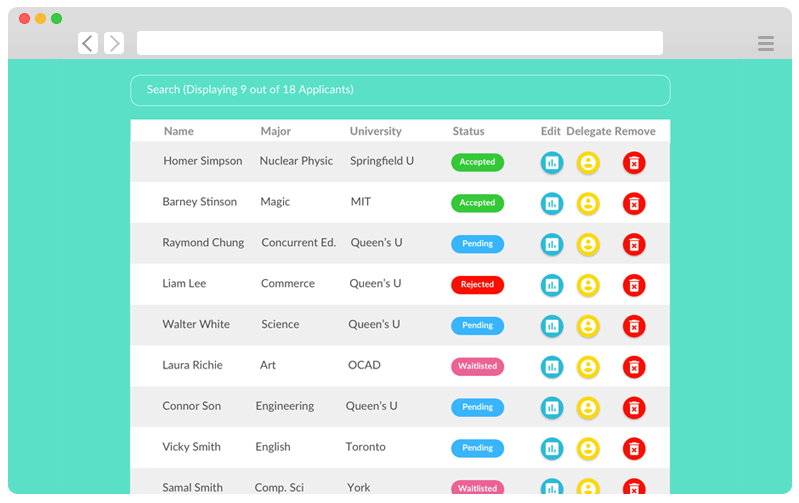

Custom delegate portal for Queen's Startup Summit
Created an application portal for Queen's Startup Summit in order to improve the efficiency of the delegation process. Before I created the portal, the previous delegate teams view all application through a spreadsheet. This increases the time to view an applicant's application especially when going over 100 applications. I have also included additional functionalities that will greatly benefit the delegation team by allowing them to work more efficiently like having real-time search and limiting the amount of applications view per page that would decrease the viewing time per applicant.
This is my first time building an application portal and implementing the MEAN stack. If I have to start all over again, I would definitely would like to implement it using Angular 2.0 instead of Angular 1.0.